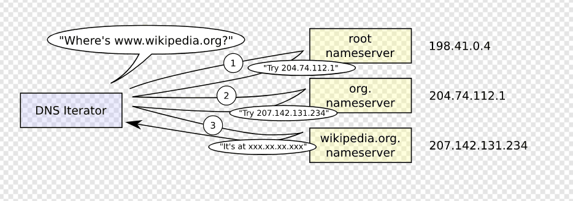

当我们在浏览器中键入 google.com 时，背后会发生什么？
当您只需要按下“g”时，浏览器就会收到该事件，整个自动完成机器就会进入高速运转状态。根据您的浏览器算法，如果您不是处于私密/隐身模式，则网址栏下方的Dropbox中会显示各种建议。这些算法中的大多数都根据搜索历史记录和书签对结果进行优先级排序。您将会不会继续输入“google.com”，因此都无关紧要，但是在您到达那里之前会运行大量代码，并且每次按键都会优化建议。它甚至可能在您输入之前就已经推荐“google.com”。
选择一个零点（我没看懂😅原文是To pick a zero point），我们选择键盘上的 Enter 键，点击其范围的底部。此时，特定于回车键的电路被关闭（直接或电容）。这允许少量电流流入键盘的逻辑电路，键盘扫描每个按键开关的状态，消除开关快速间歇闭合的电噪声，并将其转换为键码整数。然后，键盘控制器对键码进行编码，以便传输到计算机。现在，这几乎普遍通过通用串行总线（USB）或蓝牙连接。
对于 USB 键盘：
• 生成的键码由内部键盘电路存储器存储在称为“端点”的寄存器中。
• 主机 USB 控制器每大约 10 毫秒轮询一次“端点”，因此它获取存储在其上的键码值。
• 此值将转到以 1.5 Mb/s （USB 2.0） 的最大速度发送的 USB SIE（串行接口引擎）。
• 然后，此串行信号在计算机的主 USB 控制器上进行解码，并由计算机的人机接口设备 （HID） 通用键盘设备驱动程序进行解释。
• 然后，密钥的值将传递到操作系统的硬件抽象层。
在触摸屏键盘的情况下：
• 当用户将手指放在现代电容式触摸屏上时，少量电流被传输到手指上。这通过导电层的静电场完成电路，并在屏幕上的该点产生压降。然后，屏幕控制器引发一个中断，报告“单击”的坐标。
• 然后，移动操作系统在其 GUI 元素之一（现在是虚拟键盘应用程序按钮）中通知当前关注的应用程序单击事件。
• 虚拟键盘现在可以引发软件中断，以将“按键按下”消息发送回操作系统。
• 此中断通知当前聚焦的应用程序“按键”事件。
浏览器现在在 URL（统一资源定位器）中包含以下信息：
• 协议“http”：使用“超文本传输协议”
• 资源“/”：检索主（索引）页
当没有给出协议或有效域名时，浏览器继续将地址框中给出的文本提供给浏览器的默认Web搜索引擎。
• 浏览器检查其“预加载的HSTS（HTTP严格传输安全）”列表。这是仅请求通过HTTPS联系的网站列表。
• 如果网站在列表中，浏览器将通过HTTPS而不是HTTP发送其请求。否则，初始请求将通过 HTTP 发送。
注意：该网站仍然可以使用HSTS策略，而不会在HSTS列表中。用户对网站的第一个 HTTP 请求将收到一个响应，请求用户仅发送 HTTPS 请求。但是，此单个 HTTP 请求可能会使用户容易受到降级攻击，这就是 HSTS 列表包含在现代 Web 浏览器中的原因。
现代浏览器首先请求https
浏览器尝试找出输入域的 IP 地址。DNS 查找按如下方式进行：
• 浏览器缓存：浏览器将 DNS 记录缓存一段时间。有趣的是，操作系统不会告诉浏览器每个DNS记录的生存时间，因此浏览器会将它们缓存固定的持续时间（因浏览器而异，2-30分钟）。
• 操作系统缓存：如果浏览器缓存不包含所需的记录，则浏览器将进行系统调用（在 Windows 中为 gethostbyname）。操作系统有自己的缓存。
• 路由器缓存：请求继续发送到您的路由器，该路由器通常具有自己的DNS缓存。
• ISP DNS 缓存：检查的下一个位置是缓存 ISP 的 DNS 服务器。当然，使用缓存。
• 递归搜索：您的 ISP 的 DNS 服务器开始递归搜索，从根名称服务器到.com顶级名称服务器，再到 Google 的名称服务器。通常，DNS 服务器将在缓存中具有.com名称服务器的名称，因此不需要命中根名称服务器。
下图显示了递归 DNS 搜索的外观：
关于DNS的一个令人担忧的事情是，整个域（如 wikipedia.org 或 facebook.com）似乎映射到单个IP地址。幸运的是，有一些方法可以缓解瓶颈：
• 轮循机制 是一种解决方案，其中 DNS 查找返回多个 IP 地址，而不仅仅是一个 IP 地址。例如，facebook.com 实际上映射到四个 IP 地址。
• 负载平衡器是侦听特定 IP 地址并将请求转发到其他服务器的硬件。主要站点通常使用昂贵的高性能负载平衡器。
• 地理 DNS 通过将域名映射到不同的 IP 地址（具体取决于客户端的地理位置）来提高可伸缩性。这非常适合托管静态内容，以便不同的服务器不必更新共享状态。
• 任播是一种路由技术，其中单个 IP 地址映射到多个物理服务器。不幸的是，任播不适合TCP，并且很少在这种情况下使用。
大多数 DNS 服务器本身使用任播来实现 DNS 查找的高可用性和低延迟。任播服务的用户（DNS就是一个很好的例子）将始终连接到“最近”（从路由协议的角度来看）DNS服务器。这减少了延迟，并提供了一定程度的负载平衡（假设您的使用者均匀分布在您的网络中）。
🎵本期背景音乐：木漏れ日のささやき
感谢观看，我是冰渊(IceAbyss)，我们下期再见:)👋👋🏻👋🏼👋🏽👋🏾👋🏿
若有错漏或者维权的地方请联系我->邮箱📧iceabyss545@gmail.com